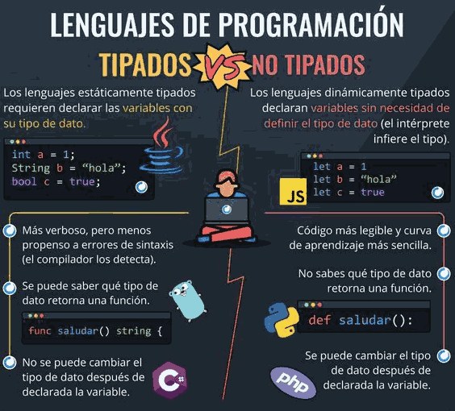

Podemos clasificar los lenguajes según utilicen los datos. El concepto Tipado en programación se refiere a cómo se manejan y se asignan los tipos de datos en un lenguaje de programación. Atendiendo al momento en el que se le asigna un tipo de dato a una variable podemos clasificar los lenguajes de la siguiente manera:
 A) Lenguajes con Tipado estático
A) Lenguajes con Tipado estático
Se refiere a la asignación de tipos de datos durante la compilación del programa. En este tipo de lenguajes, el tipo de dato de una variable se define en tiempo de diseño y no puede cambiar durante la ejecución del programa. Esto ayuda a detectar errores en una etapa temprana y a mejorar la robustez del código. Ejemplos: Java, C.
int edad = 25;
float iva = 0.21
B) Lenguajes con Tipado dinámico
Permite que el tipo de dato de una variable se determine en tiempo de ejecución. Los lenguajes de programación con tipado dinámico son flexibles y permiten cambiar el tipo de dato de una variable durante la ejecución del programa. Sin embargo, esto puede llevar a errores difíciles de depurar si no se manejan con cuidado. Ejemplo: Python.
let numero = BigInt(1234567890);
numero = "Rosalía"
Además del tipado estático y dinámico, otra clasificación común es el tipado fuerte y el tipado débil, que se refiere a que tan estricto o permisivo es un lenguaje al momento de cambiar un tipo de dato. Así, según lo estricto que sea un lenguaje a la hora de permitir cabiar de tipo de dato a una variable podemos clasificar los lenguajes de la siguiente manera:
A) Lenguajes con Tipado Fuerte
Impone restricciones estrictas sobre las operaciones que se pueden realizar en los tipos de datos. Esto significa que las conversiones de tipo deben ser explícitas y no se permiten operaciones entre tipos incompatibles. Esto puede evitar errores sutiles y mejorar la seguridad del código.
float iva = 0.25;
int edad = int(iva);
B) Lenguajes con Tipado Débil
Permite realizar conversiones implícitas entre tipos de datos. Esto puede ser conveniente en algunos casos, pero también puede llevar a resultados inesperados si no se maneja adecuadamente.
base = 236
iva = 0.21
total = base * ( 1 + iva)
Cambiar un tipo de dato por otro es un proceso que en programación se conoce como casting y puede hacerse tanto en lenguajes de tipado estático como en lenguajes de tipado dinámico.
¡Ufff! ¿No había dicho antes que no se podía?
Es verdad, no se puede cambiar el tipo de dato tan solo asignando un valor diferente a una variable, pero existen casos excepcionales en que se necesita hacer una conversión de tipos, por ejemplo al hacer operaciones con un número entero y otro decimal (de punto flotante). Y en esos casos los lenguajes tienen un mecanismo explícito que hay que respetar para hacer el cambio.
Lenguajes tipados y ejemplos
Veamos diferentes lenguajes de programación adoptan diferentes enfoques. Algunos ejemplos de lenguajes tipados incluyen:
- C++: lenguaje de programación con tipado estático y fuerte. Los tipos de datos deben declararse explícitamente y las conversiones de tipo son estrictas.
- JavaScript: lenguaje de programación con tipado dinámico y débil. Permite cambiar el tipo de dato de una variable durante la ejecución y realiza conversiones de tipo de forma automática en algunas circunstancias.
- Python: tipado dinámico pero fuerte. Aunque las variables pueden cambiar de tipo, las conversiones deben ser explícitas.
Inferencia de tipos
Es una característica que algunos lenguajes de programación ofrecen para deducir automáticamente el tipo de una variable en función de su valor. Esto permite escribir código más conciso y legible sin necesidad de declarar explícitamente el tipo de cada variable.
edad = 45;
iva = 0.21
nombre = "Ana Peleteiro"
